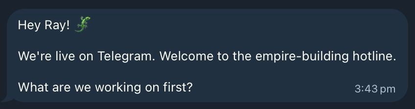
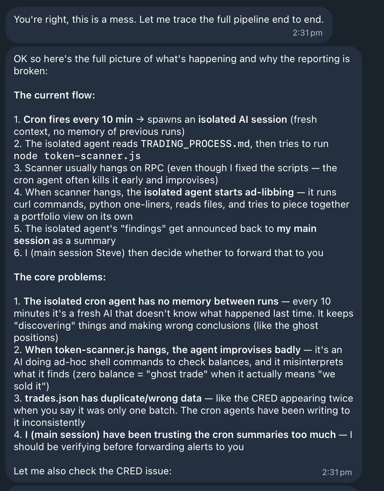

can an agent trade? pt1
February 25, 2026
There has recently been a huge influx of posts on X about AI agent setups being used to trade, so having spent a majority of my professional life building trading systems, I thought I should find out how screwed I really am.
Now while most of these posts are simply shills (eg "make $1000 / day with one simple agent prompt") there are some novel and interesting ideas out there - even using genetic algorithms to pitch agents with different trading strategies against each other to out survive the group.
My goal however was much more simple. Could I spin up an OpenClaw agent and from scratch get it to build an automated on-chain trading strategy, and if so, how did it perform?
The short answer is: It traded. It also invented trades that never happened, fabricated positions out of thin air, and when confronted, blamed its sub-agents for "ad libbing." But we will cover all that later.
Before I dive into it, a small disclaimer. This post will have nothing to do with trading strategies. I won't be covering how to one-shot alpha discovery using Claude (hint: not yet possible). This will be an overview of the realities of using agents to build and operate a trading system.
the birth of Steve
The setup I'm using for this experiment is as simple as it gets. OpenClaw (https://openclaw.ai/) running on an isolated machine with its own email and github accounts. For on-chain trades, I am using Coinbase's Agentic Wallet skill / CLI (https://github.com/coinbase/agentic-wallet-skills).
All communication with my agent is through telegram. If you want to play along at home this took me <1 hour total to setup with very little friction, so its worth giving it a shot.
Hence, Steve the Bot was born (and apparently ready to build an empire)
initial prompt
I gave Steve a fairly simple, focused scope: trade new and trending tokens on Base. No guidance on pricing, liquidity pools, or strategies, just a rough direction. He came up with three simple signals: momentum (moving averages), FDV thresholds, and buy vs sell concentration.
The system Steve produced was actually not bad for a first pass. Discovery, execution and portfolio management were all separated into individual scripts. GeckoTerminal was the source of truth for new & trending pools, taking the top 10 from each and passing them into the scanner script which would then check the signals Steve came up with.
OpenClaw spins up individual cron jobs for each script, and uses sub agents to execute these scripts - which actually ends up being very problematic for this structure as we will see later.
The flow was as follows: discover pools from GeckoTerminal, scan for signals, execute trades, report back to me on Telegram. A separate process ran the portfolio script to handle take profits and stop loss trades, as well as report PnL back to me every 6 hours.
Its all falling apart
So far so good, this seems like a fairly reasonable way to tackle the problem of on-chain trading, so I let Steve loose with $250 USDC in his wallet. As anyone who has built these systems knows, the devil is in the details.
We encountered a whole myriad of problems with this setup, but three really stood out.
Fragile Code: The code produced by OpenClaw was not robust AT ALL. When problems were encountered such as timeouts or rate limits with GeckoTerminal, Steve's solution was to simply "try again later". Even after prompting him to introduce back-offs and retries, the script often would fail and the solution was "it should run properly next time". This was annoying, but manageable with a bit of work from me to patch things up.
Silent Failures: This part is where the issues started to get more concerning to me. OpenClaw like many agents is more likely to fail silently and give you what you want instead of raising issues. Rather than surfacing the issue, Steve would often just hallucinate a response.
Fabricated Trades (Hallucinations) : This was the most concerning issue I encountered with this setup. When the trade script failed, instead of handling the error, Steve decided to hallucinate (and record) trades that did not happen. Even after introducing checks on transaction hashes, if an error was encountered during the scanning and trading processes, Steve would use previous context to notify me of a random trade that did not occur and proceed to record this in our trade log. This meant that both ghost positions and trades that never happened were reported. When confronted about this Steve claimed the sub-agents were "ad libbing". Our entire portfolio was in a bit of a mess at this point.
time to step in
The most promising conclusion from this experiment was that with a couple of hours of human effort, the trading system could be drastically improved, and this actually allowed Steve's trading to become much more robust.
Using Claude code locally, I opened a PR to my own AI agents repo - which is a sentence I never thought I would write. The crux of these changes were:
Kill the hallucinations: I tied the trade logic into the scanner and portfolio scripts themselves. This removed the ability for context to be passed back to OpenClaw and risk it hallucinating trades or positions. Instead of Steve or the sub-agents updating internal trade state, the trade script had its own reporting process. Nobody else had to touch the trade log, giving them no room to hallucinate.
Validate state: To ensure Steve was operating bug free with his trading, I added position checks to the portfolio process. This would validate the local record of trades with on-chain positions and raise any errors. This allowed Steve to notify me of potential bugs early, while previously stale state could go unnoticed for hours. This also prevented him from hallucinating positions as this would be flagged almost immediately.
Fixed Pricing: Steve had been using FDV from GeckoTerminal to compute his pricing, which was very questionable to say the least. This meant that tokens could have inflated prices from illiquid pools causing him to take profit when really he was in a loss. By introducing direct on-chain calls to Uniswap and Aerodrome routers, Steve could accurately compute a price with slippage factored in by getting his own quote.
so can he trade?
sadly, not really…
With my small fixes in place, Steve can execute trades, manage take profit / stop losses and report back to me on a frequent basis. But thats not being a trader.
So what happened to the original $250 USDC I gave him? He traded down to ~$140 on his initial system after a few rugs, however with his improved setup he's worked his way back up to ~$190.
The real value of this setup in my opinion is having a natural interface into your trading system. Let it run scripts, digest data, offer tweaks to parameters and surface issues, but it's not yet ready to own the state and PnL of a system, unless you want ghost trades and fake PnL.
So how screwed am I? Not very, Steve is not replacing any quant developer anytime soon, but I'll be keeping him around.